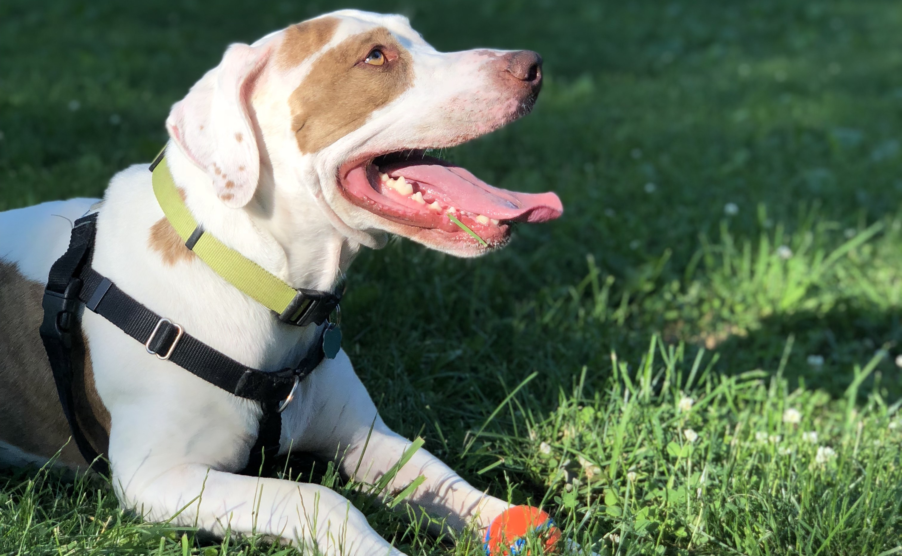

![[dog paw print outline clip art]](images/Dog-Paw-Print-Outline-Clip-Art.png "Dog-Paw-Print-Outline-Clip-Art")

Bounder is pictured on July 4, 2019.
Our Story
Bounder's Buds was founded in 2020 to help shelter dogs find homes. In addition to fostering dogs without homes, our organization works to help dogs find homes.
Our Mission
Our mission is to increase awareness of the importance of adopting shelter dogs. According to the ASPCA, about 3.3 million dogs enter U.S. animal shelters ever year (and that is just the United States!). By raising awareness, we hope to make a dent in reducing this number.
Check out our services page to learn more about our services!